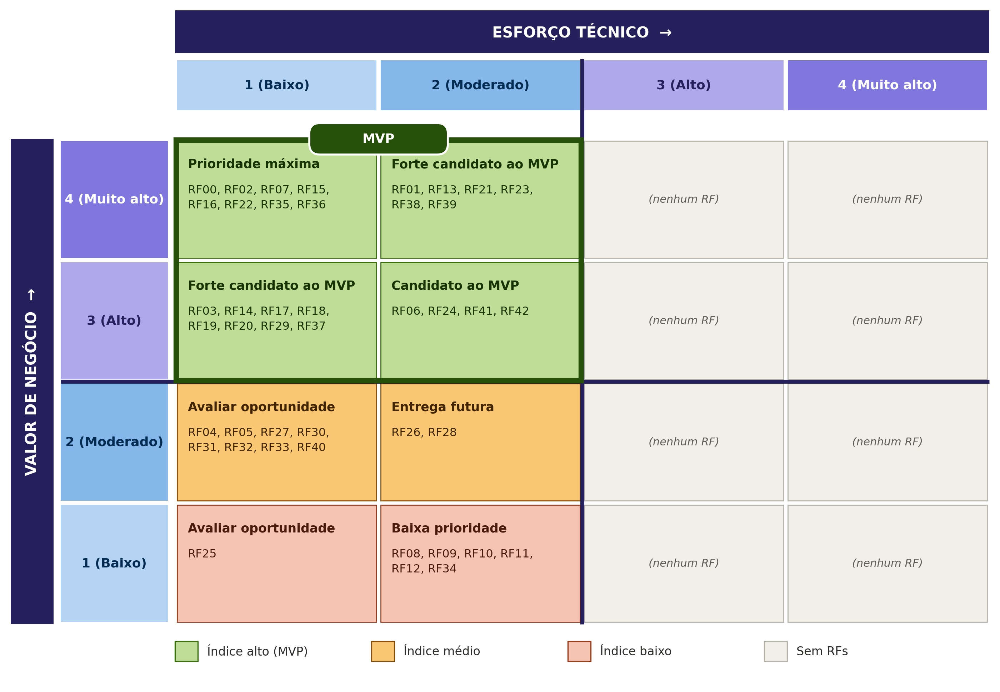

10 Backlog de Produto
10.1 Backlog Geral
O backlog geral contém os 43 requisitos funcionais (RF00 a RF42) com o critério de aceitação de cada um. A descrição completa dos requisitos e a rastreabilidade com os RNFs estão na seção de Requisitos; o código de cada item leva a essa descrição.
| Código | Requisito | Critério de Aceitação |
|---|---|---|
| RF00 | Encerrar sessão | Ao encerrar a sessão, as credenciais do usuário são invalidadas e ele é redirecionado para a tela de login. Após o encerramento, o acesso a qualquer funcionalidade administrativa exige novo login. |
| RF01 | Autenticar usuário | Com identificação e credenciais válidas, o coordenador acessa o sistema. Com credenciais inválidas, o acesso é negado e uma mensagem de erro é exibida. |
| RF02 | Controlar acesso | Usuário autenticado com perfil de coordenador acessa as funcionalidades administrativas. Requisição sem autenticação ou sem o perfil de coordenador a essas funcionalidades é negada. |
| RF03 | Cadastrar turma | A turma só é salva com modalidade, horário e capacidade máxima de alunos preenchidos. Após salva, a turma aparece na lista de turmas. Campo obrigatório vazio impede o salvamento e indica qual campo precisa ser preenchido. |
| RF04 | Editar turma | Os dados alterados da turma são salvos e exibidos atualizados na consulta. Os alunos já associados à turma são mantidos. |
| RF05 | Inativar turma | Após a confirmação, a turma passa a constar como inativa. Os alunos e as frequências vinculados a ela continuam consultáveis, sem exclusão de registros. |
| RF06 | Associar aluno à turma | Um aluno cadastrado pode ser associado a uma turma, e a associação aparece na lista da turma e na ficha do aluno. Ao remover a associação, o aluno sai da lista da turma e o histórico de participação é mantido. |
| RF07 | Consultar alunos de uma turma | Ao selecionar uma turma, o sistema lista todos os alunos associados a ela e somente eles. Turma sem alunos exibe a lista vazia com mensagem informativa. |
| RF08 | Registrar doação recebida | A doação é salva com o doador ou parceiro, o tipo de recurso e as demais informações obrigatórias, e passa a constar no histórico de doações. Campo obrigatório vazio impede o registro. |
| RF09 | Editar doação recebida | Os dados alterados da doação são salvos e exibidos atualizados no histórico. A edição é registrada em log com data e usuário responsável. |
| RF10 | Registrar documentos de prestação de contas | Cada documento (orçamento, nota fiscal, registro fotográfico ou audiovisual) só é salvo vinculado a uma doação ou recurso recebido. Após salvo, o documento pode ser aberto na consulta da doação. |
| RF11 | Editar documentos de prestação de contas | O documento já registrado pode ser substituído ou ter seus dados alterados, mantendo o vínculo com a doação ou recurso. A versão atualizada é exibida na consulta. |
| RF12 | Consultar doações e prestações de contas | Ao informar um período, o sistema lista as doações registradas nele com os documentos de prestação de contas vinculados. Período sem registros exibe mensagem informativa. |
| RF13 | Publicar conteúdo institucional | O conteúdo publicado (informações, fotos ou vídeos) passa a ser exibido no módulo público para qualquer visitante, sem necessidade de login. |
| RF14 | Editar conteúdo institucional | As alterações salvas no conteúdo são exibidas atualizadas no módulo público. |
| RF15 | Consultar conteúdo institucional | Qualquer visitante, sem autenticação, visualiza os conteúdos institucionais publicados. Conteúdo removido não é exibido. |
| RF16 | Remover conteúdo institucional | Após a confirmação, o conteúdo deixa de ser exibido no módulo público. |
| RF17 | Publicar evento | O evento só é publicado com nome, data, local, horário e descrição preenchidos, e passa a constar na lista de eventos do módulo público. |
| RF18 | Editar evento | Os dados alterados do evento ou campeonato são salvos e exibidos atualizados na lista de eventos. |
| RF19 | Remover evento | Após a confirmação, o evento ou campeonato deixa de constar na lista de eventos. |
| RF20 | Consultar eventos | O sistema lista os eventos e campeonatos publicados com nome, data, local, horário e descrição. Evento removido não aparece na lista. |
| RF21 | Cadastrar aluno | O aluno é salvo com seus dados cadastrais e com a documentação exigida pelo CECP (identidade, CPF, comprovante de residência, foto 3x4, atestado para prática de esporte e as duas fichas assinadas). Após salvo, o aluno pode ser localizado na consulta. Campo obrigatório vazio impede o salvamento e indica qual campo precisa ser preenchido. |
| RF22 | Editar aluno | Os dados cadastrais alterados são salvos e exibidos atualizados na ficha do aluno. O histórico do aluno é mantido. |
| RF23 | Consultar ficha do aluno | A ficha exibe os dados cadastrais do aluno e seu histórico de participação em turmas. |
| RF24 | Inativar aluno | Após a confirmação, o aluno passa a constar como inativo. O histórico do aluno é preservado e continua consultável na ficha. |
| RF25 | Remover dados do aluno | A remoção só é executada após confirmação e mediante pedido do responsável legal ou do próprio aluno, se ele tiver 18 anos ou mais. São removidos a identidade, o CPF e o comprovante de residência, e os demais registros são mantidos. A remoção é registrada em log. |
| RF26 | Registrar frequência | Para cada aula de uma turma, a presença ou falta de cada aluno associado é registrada com a data da aula e passa a constar no histórico de frequência do aluno. |
| RF27 | Consultar frequência | O histórico de frequência de um aluno lista as aulas com a data e a situação (presença ou falta) de cada uma. |
| RF28 | Emitir alerta de faltas críticas | Quando o número de faltas de um aluno atinge o limite configurado (inicialmente 8 faltas), o sistema gera uma notificação para a coordenação. Abaixo do limite, nenhuma notificação é gerada. |
| RF29 | Registrar medida disciplinar | A medida (advertência, suspensão ou desligamento) só é salva após confirmação e passa a constar no histórico do aluno. |
| RF30 | Publicar aviso | O aviso publicado, com destinatário voluntários, familiares ou ambos, passa a ser exibido no módulo público. |
| RF31 | Consultar avisos | Voluntários e familiares visualizam no módulo público os avisos publicados. Aviso removido não é exibido. |
| RF32 | Editar aviso | As alterações salvas no aviso são exibidas atualizadas no módulo público. |
| RF33 | Remover aviso | Após a confirmação, o aviso deixa de ser exibido no módulo público. |
| RF34 | Consultar histórico de avisos | O sistema lista os avisos publicados anteriormente com seus destinatários e a data de publicação. |
| RF35 | Acessar formulário de matrícula online | O formulário de matrícula abre pelo link público, sem necessidade de login. |
| RF36 | Preencher dados do aluno | O formulário aceita nome, data de nascimento, contato e modalidade ou turma de interesse do aluno. O envio é bloqueado enquanto algum desses campos estiver vazio. |
| RF37 | Informar dados do responsável legal | Quando a data de nascimento indica aluno menor de 18 anos, o formulário exige nome, contato e vínculo do responsável legal. Para aluno com 18 anos ou mais, esses dados não são exigidos. |
| RF38 | Registrar consentimento de dados pessoais | O envio do formulário só é permitido após o aceite do termo de tratamento de dados pessoais. O aceite é registrado com data, hora, versão do termo e identificação de quem aceitou (aluno ou responsável legal). |
| RF39 | Registrar termo de uso de imagem | O termo de uso de imagem é apresentado em item separado do consentimento de dados pessoais, e a resposta do aluno ou do responsável legal é registrada. |
| RF40 | Informar pessoas autorizadas a retirar o aluno | Para aluno menor de idade, o formulário exige ao menos uma pessoa autorizada, com nome e contato, ou a indicação de que o menor pode ir embora sozinho. Para aluno maior de idade, essa informação não é exigida. |
| RF41 | Emitir comprovante de solicitação | Após o envio bem-sucedido do formulário, o sistema exibe ao solicitante um número de protocolo. Cada solicitação recebe um número de protocolo distinto. |
| RF42 | Analisar solicitações de matrícula | A coordenação consulta as solicitações recebidas e define cada uma como aprovada, recusada ou em lista de espera. O status definido é exibido atualizado na consulta. |
10.2 Priorização do Backlog Geral e MVP
A priorização combinou dois modelos: o MoSCoW (Must, Should, Could e Won't have), usado para o valor de negócio e avaliado com o cliente, e a pontuação de esforço técnico atribuída pela equipe (esforço, complexidade e lacuna de capacidade). Os dois critérios orientam o desenvolvimento de acordo com os objetivos do projeto e formam a matriz 4 × 4 da seção 10.2.2.
O MVP é o conjunto mínimo de funcionalidades que permite lançar o produto e colocá-lo em uso pelo cliente, com foco nos requisitos essenciais para validar o valor de negócio.
10.2.1 Critérios de priorização
Esforço técnico: avaliado pela equipe em três dimensões, todas orientadas no mesmo sentido (maior nota, maior dificuldade).
| Pontuação | Esforço | Complexidade | Lacuna de capacidade da equipe |
|---|---|---|---|
| 1 | Até 2 horas | Solução conhecida, com poucas dependências | A equipe domina plenamente o necessário |
| 2 | Entre 2 e 5 horas | Exige alguma investigação ou integração | Conhecimento suficiente, com pouca aprendizagem adicional |
| 3 | Entre 5 e 8 horas | Várias dependências ou incertezas técnicas | A equipe precisa desenvolver conhecimentos relevantes |
| 4 | Mais de 8 horas | Elevada incerteza, integração crítica ou tecnologia não dominada | A equipe ainda não possui os conhecimentos ou recursos |
Como calcular: ET = (Esforço + Complexidade + Lacuna) / 3. Para posicionar o RF na matriz, o ET é arredondado para o inteiro mais próximo.
Valor de negócio (MoSCoW): avaliado com o cliente, com a escala abaixo.
| Pontuação | Classificação | Interpretação |
|---|---|---|
| 4 | Tem que ter (Must have) | Indispensável para resolver o problema central ou viabilizar o produto |
| 3 | Deveria ter (Should have) | Muito importante, mas o produto pode operar temporariamente sem o requisito |
| 2 | Poderia ter (Could have) | Agrega valor, mas pode ser adiado sem comprometer o objetivo principal |
| 1 | Não precisa ter (Won't have now) | Não é prioritário para a versão atual |
10.2.2 Matriz 4 × 4

Índice de prioridade
- Alto: todo o primeiro quadrante.
- Médio: valor moderado e esforço baixo ou moderado.
- Baixo: valor baixo e esforço baixo ou moderado.
A partir dessas informações, foi gerada a seguinte tabela:
| Código | Índice | Prior. | MVP |
|---|---|---|---|
| RF02 | Alto | 1 | ✔ |
| RF07 | Alto | 1 | ✔ |
| RF15 | Alto | 1 | ✔ |
| RF16 | Alto | 1 | ✔ |
| RF22 | Alto | 1 | ✔ |
| RF35 | Alto | 1 | ✔ |
| RF36 | Alto | 1 | ✔ |
| RF00 | Alto | 1 | ✔ |
| RF03 | Alto | 1 | ✔ |
| RF17 | Alto | 1 | ✔ |
| RF18 | Alto | 1 | ✔ |
| RF19 | Alto | 1 | ✔ |
| RF20 | Alto | 1 | ✔ |
| RF29 | Alto | 1 | ✔ |
| RF37 | Alto | 1 | ✔ |
| RF23 | Alto | 1 | ✔ |
| RF39 | Alto | 1 | ✔ |
| RF14 | Alto | 1 | ✔ |
| RF01 | Alto | 1 | ✔ |
| RF21 | Alto | 1 | ✔ |
| RF38 | Alto | 1 | ✔ |
| RF06 | Alto | 1 | ✔ |
| RF24 | Alto | 1 | ✔ |
| RF42 | Alto | 1 | ✔ |
| RF13 | Alto | 1 | ✔ |
| RF41 | Alto | 1 | ✔ |
| RF04 | Médio | 2 | — |
| RF05 | Médio | 2 | — |
| RF27 | Médio | 2 | — |
| RF30 | Médio | 2 | — |
| RF31 | Médio | 2 | — |
| RF32 | Médio | 2 | — |
| RF33 | Médio | 2 | — |
| RF40 | Médio | 2 | — |
| RF26 | Médio | 2 | — |
| RF28 | Médio | 2 | — |
| RF25 | Baixo | 3 | — |
| RF12 | Baixo | 3 | — |
| RF34 | Baixo | 3 | — |
| RF08 | Baixo | 3 | — |
| RF09 | Baixo | 3 | — |
| RF11 | Baixo | 3 | — |
| RF10 | Baixo | 3 | — |
As notas do cliente e da equipe, os votos individuais e o cálculo que levaram aos resultados acima estão registrados em Comprovação de Evidência.
Versionamento
| Versão | Data | Descrição | Autor(es/as) | Revisor(es/as) |
|---|---|---|---|---|
| 1.0 | 05/09/2026 | Documento incial do item 10 | Marcos Monteiro |